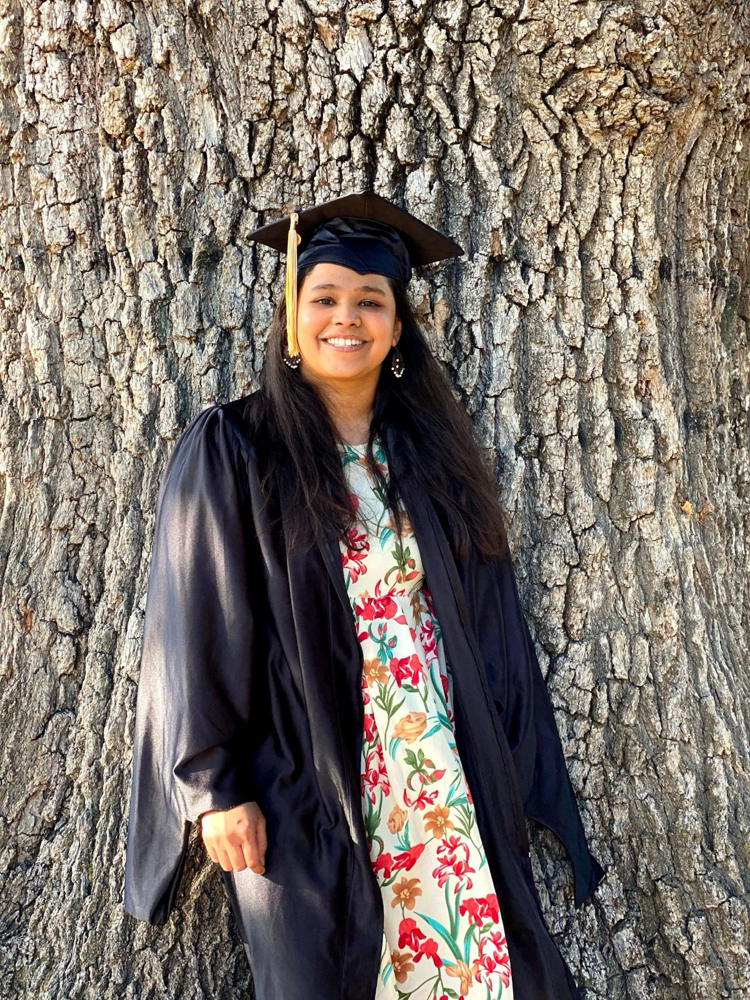
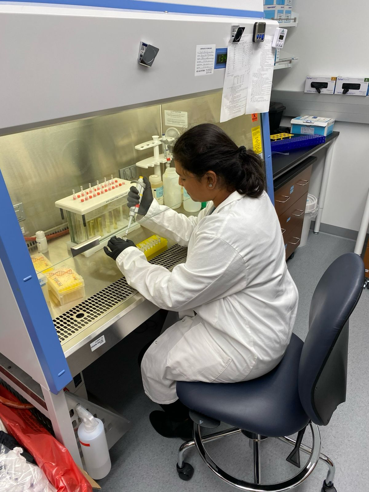
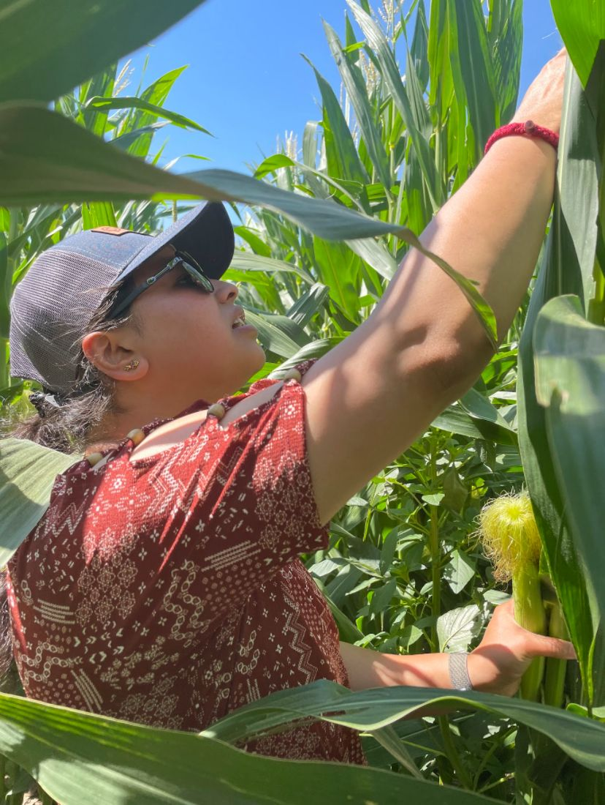

About



Passionate about the dynamic intersection of life sciences and bioinformatics, I bring a fervent dedication to pioneering research that drives transformative advancements in global healthcare. My expertise spans a spectrum of critical areas within bioinformatics, marked by a focus on epigenetics analysis and RNA sequencing methodologies.
Currently, as a bioinformatics research analyst, I am working on developing, maintaining, and executing computational pipelines used to analyze large-scale cell free DNA sequencing data obtained from Brain cancer patients, as well as generating the quantitative results, statistical analyses, and visualizations that support grant applications, scientific publications, and ongoing research efforts.
Drawing from a rich tapestry of projects and internships, I am poised to leverage my expertise in support of organizational objectives, driving innovation and advancing the frontiers of bioinformatics research. Committed to continuous learning and professional growth, I am eager to contribute to initiatives that propel scientific discovery and foster tangible improvements in healthcare outcomes.
Technical Skills
Experience
Bioinformatics Research Analyst (2024–Present)
- Built and managed cfDNA pipelines (ARTEMIS-DELFI) that taps into cfDNA fragmentomics proving means for early and non-invasive detection of brain tumors
- Processed low depth Illumina, ATAC-seq and Long read nanopore (ONT) data to aid in brain tumor detection
- Integrated clinical biomarkers (Ki67, tumor burden, tumor size)
- Analyzing EM-seq cfDNA data to evaluate the impact of focused ultrasound (FUS)-mediated blood–brain barrier disruption on enhancing cfDNA release and improving detection sensitivity.
Senior Data Associate (2021–2024)
- Processed ~20 WGS plant genomes (~1TB scale datasets)
- Designed AWS Batch pipeline handling >50TB data workflows
- Co-developed sounDMR R tool for ONT methylation analysis to integrate epigenetic regulation with trait development in plants
- Built in-house oligo design tool in python that is hosted on an in-house server
Staff Research Associate II (2020–2021)
- Developed RNA-seq pipeline to identify differentially expressed genes responsible for disease progression in rheumatoid arthritis patients
- The project included 1. Cross sectional study : R.A patients vs Control 2. Longitudinal study : To track genes through different timepoints of the disease progression
- Abstract on the project was accepted at the American College of Rheumatology (ACR)
Research Intern (2019)
- Single-cell RNA-seq analysis using Seurat in mice with myeloid Leukemia
- utilized ML models for classification of Glioblastoma from Controls
- Performed Differential expression analysis, Network analysis and WGCNA
Publications
Population epigenomics tool for plant systems biology
cfDNA fragmentation analysis in metastatic glioblastoma (FGFR3::TACC3)
High-grade glioma in pregnancy: case report & literature review
Transcriptomic biomarkers for rheumatoid arthritis progression
Selected Projects
Beyond the Lab
A few things I enjoy outside of bioinformatics research